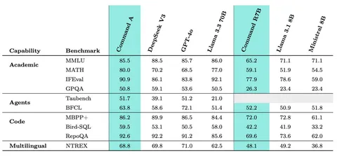
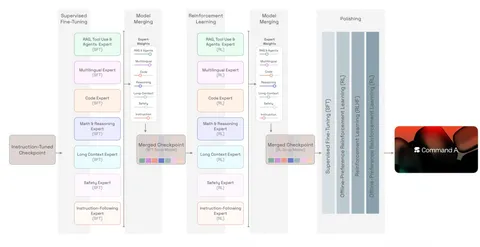

Компания Cohere выпустила технический отчёт своей опенсорс-модели Command A. Рассказываем главное, что мы из него узнали.
Command A — это dense-модель на 111 миллиардов параметров. Всего она поддерживает 23 языка, а на английском по качеству не уступает DeepSeek-V3. Создатели заявляют, что скорость инференса — до 156 токенов в секунду на всего одной H100 (вероятно, с квантизацией модели в тип пониженной точности). Это в 1,75 раза выше, чем у GPT-4o и в 2,4 раза выше, чем у DeepSeek-V3.
В архитектуре модели, помимо GQA и SwiGLU, применяли чередующиеся аттеншен-слои (Interleaved attention layers). Чередовали три блока со скользящим окном и RoPE и один фулл-аттеншен-блок без позиционных эмбеддингов (NoPE). Благодаря этому аттеншен становится быстрее и, вероятно, лучше работает с длинным контекстом. Похожая архитектура применяется в Llama 4.
Авторы использовали µP и µTransfer для настройки гиперпараметров — параметры подбирались на маленьких моделях, а затем без дополнительного обучения (zero-shot) переносились в большую. Также прибегали к Data Parallel, Fully Sharded Data Parallel, Sequence Parallel и Tensor Parallel.
Веса модели перед вычислениями преобразовывали в FP8. Чувствительные операции, такие как экспоненты, софтмакс, нормализация слоёв и выходные эмбеддинги, оставляли в FP32, а вычисления аттеншена выполняли в BF16. При обучении полностью в FP8 авторы не замечали нестабильности, но обнаруживали деградацию на бенчмарках. Чтобы справиться с ней, первые шаги обучали в BF16, а уже после этого переходили на FP8.
Обучение происходило с постепенным расширением контекста: первые 30 тысяч шагов с контекстным окном 8 тысяч токенов, далее — 32 тысячи токенов, потом — 128 тысяч и 256 тысяч. Многие данные для длинного контекста были синтетическими.
Посттрейн проходил в шесть стадий. На каждой обучали несколько независимых моделей, которые после этого сливались в одну с помощью техники мержинга. Авторы отмечают, что такой подход позволил работать над разными доменами (код, математика, безопасность и так далее) отдельным командам и использовать наиболее подходящий задаче набор RL-алгоритмов, наград и данных.
— Instruct-модель. Обучали начальную Instruct-модель с помощью supervised learning на основе базовой модели.
— SFT-экспертные модели. Обучали шесть SFT-экспертов (для кода, математики, длинного контекста и так далее) поверх чекпойнта Instruct-модели с использованием специализированных наборов данных, чтобы максимально повысить производительность в конкретных задачах.
— SFT Soup-модель. Объединяли шесть экспертных моделей в одну soup-модель, чтобы получить единую агрегированную SFT-модель.
— RL-экспертные модели. Обучали шесть RL-экспертов поверх чекпойнта SFT soup-модели.
— RL Soup-модель. Объединяли шесть RL-экспертов в RL soup-модель, чтобы получить единую агрегированную RL-модель.
— Polished-модель. Чередовали методы best-of-N, оффлайн- и онлайн-RL-алгоритмы.
Разбор подготовил
Душный NLP
